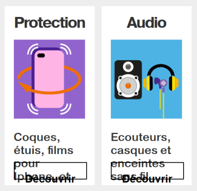

Web design - Layout
Make sure the layout is suitable for the user
Relative text size and responsive design #
Target: everyone and especially people with visual impairments, using a device outdoors and elderly people.
When: during development.
Description:
The text size should be able to be doubled (set the zoom, text only, to 200% in the browser settings). At this zoom level, the page layout can be altered, but the information must be readable (text or bunk not truncated).
In addition, we must ensure to make responsive web design, so provide different displays in screen type widths (break points) before the development phase.
Moreover, some design choices may or may not facilitate the implementation of this criterion during development, so it is important to think about it from the start.
Example:
The screenshot below shows a page with the zoom set to 100%.

Do:
Zoom set to 200%.

Don’t:
Zoom set to 200%. In this case the height of the text container did not resized according to text size.

Allow text spacing #
Target: Everyone, especially people with visual and dyslexic disabilities.
When: as of graphic design and during development.
Even if it is during the development phase that we will ensure the validity of this criterion, it is important, from the design phase, to think about the height of the lines and the spacing of the paragraphs and text. It is generally accepted that a line height (line-height) of 1.5 makes it possible to obtain a good readability of the text, for example an article in English entitled: Why you should go big with line spacing .
Description:
If the user applies the following settings, the text must remain legible (no truncated content, superimposed):
- The height of the lines must be able to be adjusted to 1.5 times minimum the size of the font.
- The space between two paragraphs must be adjustable to at least 2 times the size of the font.
- The spacing between the letters must be able to be adjusted to 0.12 times the size of the font.
- The spacing between words must be able to be adjusted to 0.16 times minimum the size of the font.
For information, the criteria mentioned above is like applying the following CSS styles at the code level:
* {
line-height: 1.5! important;
letter-spacing: .12em! important;
word-spacing: .16em! important;
}
p {
margin-bottom: 2em!important;
}
Bookmarklet:
To make the test easier, you can use the following bookmarklet that will apply these styles to your browser's current page (bookmarklet to slide in your bookmarks bar): Text spacing
Identify and maintain consistency of groupings and different regions of the page #
Target: Everyone, especially people with visual, cognitive or attention deficit disorders.
When: when designing.
Description:
Provide ways to identify and visually distinguish the different parts of the page and ensure the consistency of these regions or groupings in all pages.
Checklist:
- Make sure that the navigation mechanisms are always located at the same place in a set of pages.
- Ensure that the components and groupings that have the same function, are identified (visually) in the same way and, as far as possible, respect the classic appearance of these elements so as not to disturb the user accustomed to a specific aspect of them (for example, links are usually underlined ...).
- Ensure that the areas of the page are clearly delimited (borders, edges, sufficient contrast ...) or that there is a way to visually distinguish the groups (sub-menu, drop-down list ...) as well as the different regions of the page.
Do:

Here, the tooltip (tooltip) is delimited by a visible border and sufficiently contrasted, to identify its content.
Don't:

It is very difficult to associate the themes ("par region", "par genre"...) and the sub-themes in columns, especially since the horizontal borders are not enough contrasted.
Minimum target size #
Target: Everyone, especially people with visual impairments and those with motor or mobility disabilities.
When: during design and development.
Description:
- Interactive elements must have a sufficiently large target size or be adequately spaced to be easily activated, reducing the risk of errors.
- Interactive elements must measure at least 24 pixels height by 24 pixels width. It is essential to consider the entire click or touch area, not just the text or image.
Checklist:
- Verify the dimensions of interactive elements.
- Ensure that interactive elements meet a minimum target size of 24 pixels height by 24 pixels width, under all display conditions regardless of zoom level or viewport size.
Compliant exceptions:
- If interactive elements have a target size smaller than the minimum of 24x24 pixels but are positioned so that a circle with a diameter of 24 pixels centered on the target does not overlap with another target or the circle for an undersized target.
- If the target size of the interactive element is less than 24x24 pixels but there is a compliant alternative in the page that allows the same action.
- If the interactive element is embedded in a sentence or its size is constrained by the line height of surrounding non-interactive text.
Non-applicable exceptions:
- If the rendering of interactive elements is the default rendering of the user agent.
- If the size and position of interactive elements are crucial for the content (e.g., markers on a map) or constrained by legal obligations. In this case, it is still recommended to provide alternatives when possible.
User goal:
Help users to easily select interactive elements, even with motor difficulties and regardless of the size of the device used.
Valid Examples:
- Three buttons are displayed on the screen, each measuring 24x24 pixels.
- A row of buttons is displayed on the screen. Each button has a length greater than 24 pixels, a height of 20 pixels, and a top and bottom margin of 4 pixels.
- An interactive element has a target size smaller than 24x24 pixels but is positioned so that a circle with a diameter of 24 pixels centered on it does not overlap with other interactive elements.
WCAG Reference
2.5.8 Target Size (Minimum)
Give access to the content regardless of the orientation of the screen #
Target: Everyone in particular, people with motor or visual disability and mobility.
When: during design and development.
Description:
Access to the content must not depend on the orientation of the screen (portrait and landscape) unless a specific display orientation is essential (e.g. serious game).
WCAG reference: